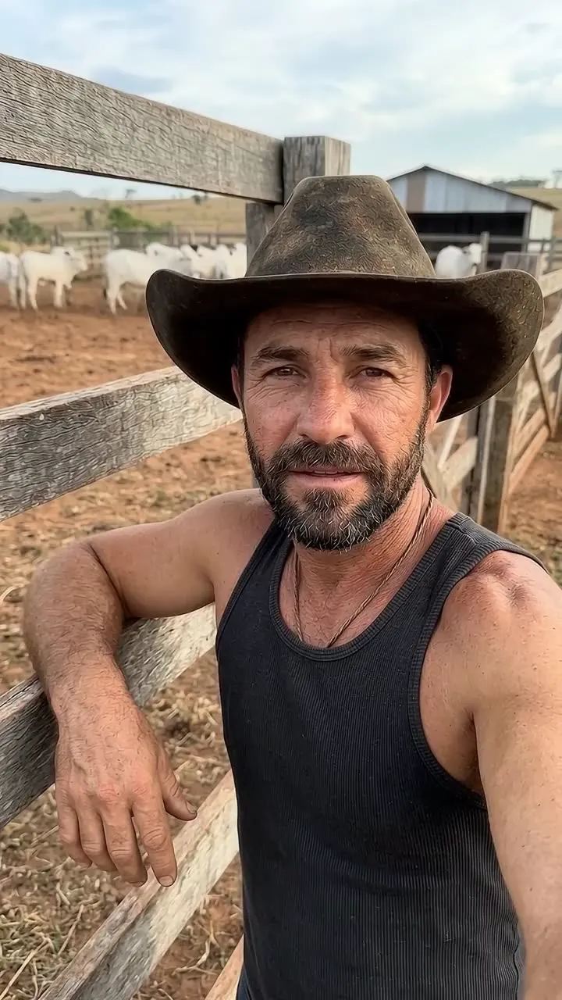

Gustavo da Roça
Dia a dia no estradão, dicas práticas e achadinhos que aguentam o tranco.

Recado do Gustavo
"Esses links aí embaixo é tudo trem que eu usaria na lida — se não presta, eu não indico não."
Toque em "Ativar som" para ouvir o recado

Os links tão aqui embaixo
Escolhe aí, compadre. Só trem que aguenta o tranco.
Meus links e lojas
Só o que aguenta o tranco
Compra direto na loja ou no app